Lotes en venta en Ucayali
Hay 33 anuncios de lotes en la región Ucayali. El precio mediano publicado es S/ 37,000, con anuncios desde S/ 1,500 hasta S/ 1,111,111. Los tamaños van de 25 m² a 2,6 ha (mediana 300 m²). 11 mencionan título o partida en su descripción (según el vendedor; no verificado).
Ver en el mapa y filtrar Cómo comprar seguro
Anuncios
 Remato terreno en Acho Mego a 10 cuadras antes de llegar 2 de Mayo ( 480M2 ) - Pucallpa
Remato terreno en Acho Mego a 10 cuadras antes de llegar 2 de Mayo ( 480M2 ) - Pucallpa
S/ 37,000 · 480 m² · Callería, UC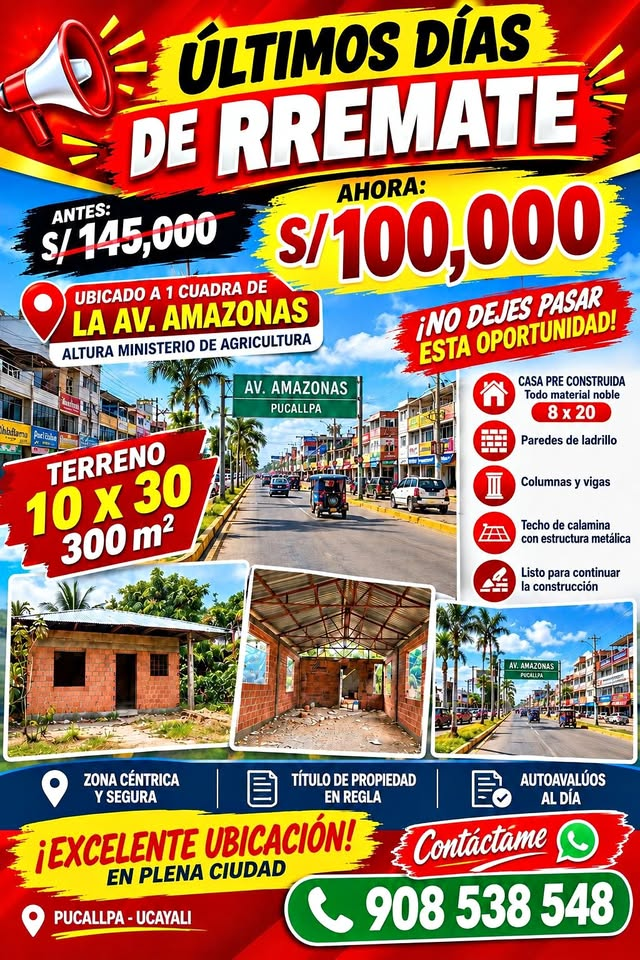
RREMATO TERRENO 300M2 EN PLENO CENTRO
S/ 100,000 · 300 m² · Callería, UC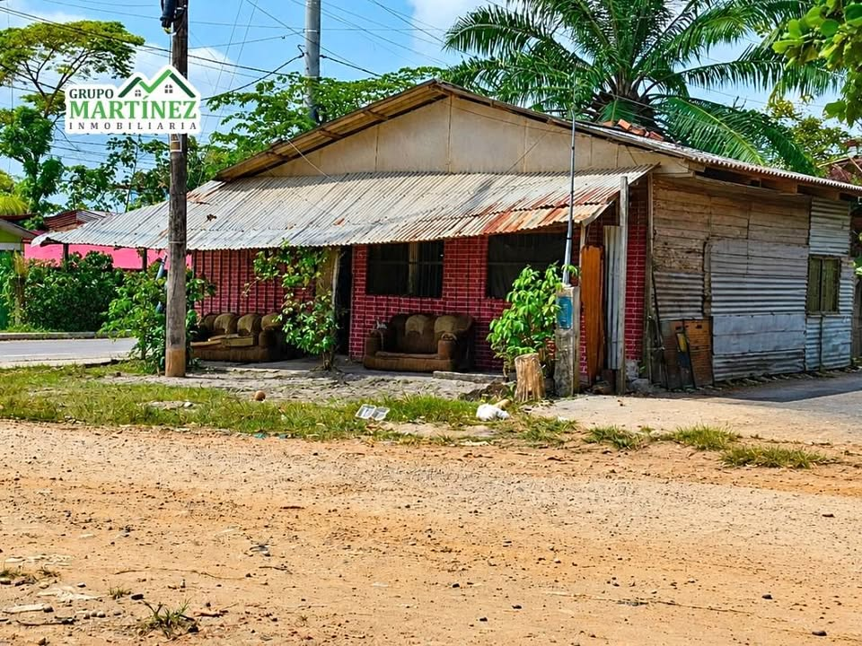
🌳🏡!!ATENCIÓN INVERSIONISTAS!! SE VENDE TERRENO EN EQUINA, FRENTE A PISTA -PUCALLPA🌳🏡
S/ 150,000 · 2,647 ha · Yarinacocha, UC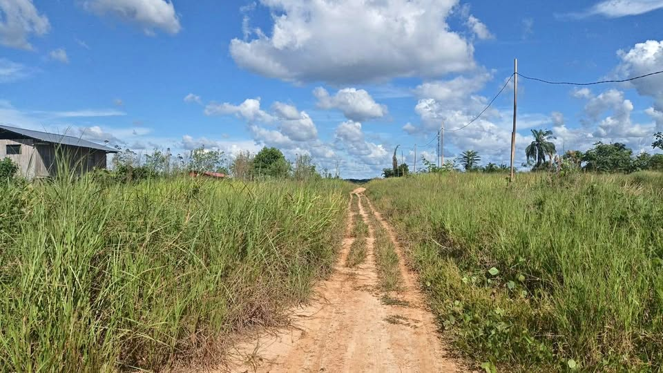
Venta de terreno 2 lotes
S/ 10,000 · 160 m² · Neshuya, UC 🌳🪴SE VENDE TERRENO TERRENO GRANDE O POR SEPARADO -PUCALLPA🌳🪴 📍 Pasaje N° 2– Pucallpa
🌳🪴SE VENDE TERRENO TERRENO GRANDE O POR SEPARADO -PUCALLPA🌳🪴 📍 Pasaje N° 2– Pucallpa
S/ 50,000 · 600 m² · Yarinacocha, UC 🚨 ¡OPORTUNIDAD DE INVERSIÓN! Terreno de 400 m² en Venta 🚨
🚨 ¡OPORTUNIDAD DE INVERSIÓN! Terreno de 400 m² en Venta 🚨
S/ 80,000 · 400 m² · Callería, UC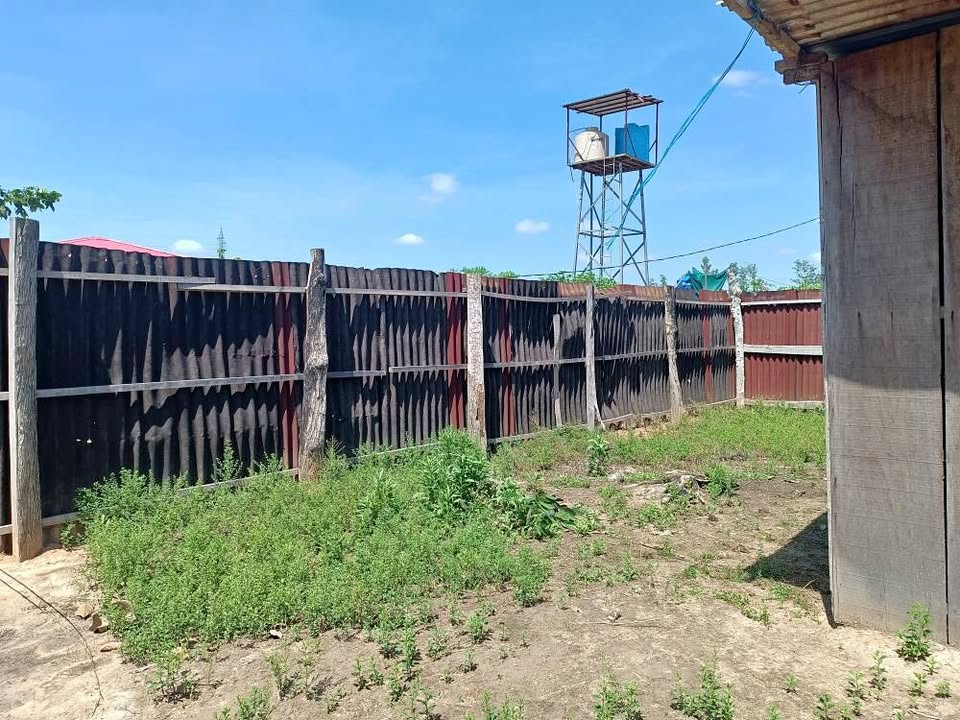
TERRENO EN REMATE
S/ 12,000 · 2,325 m² · Callería, UC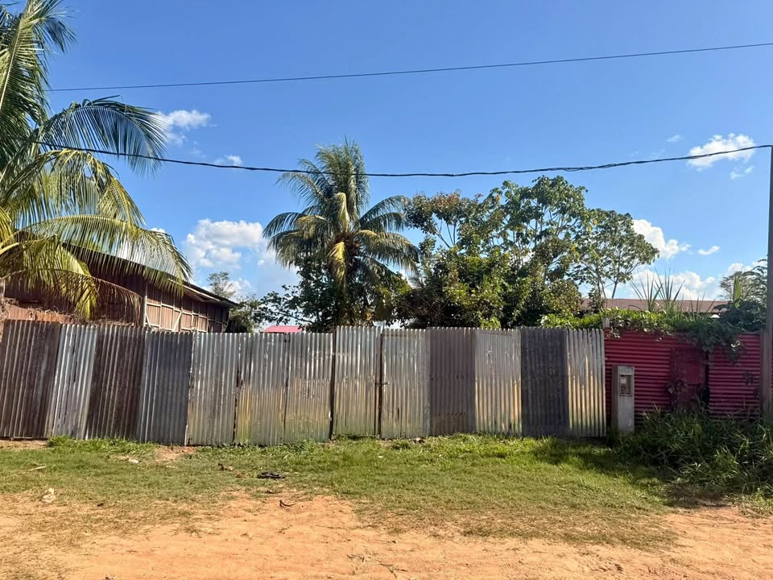
Venta de terreno
S/ 14,999 · 300 m² · Callería, UC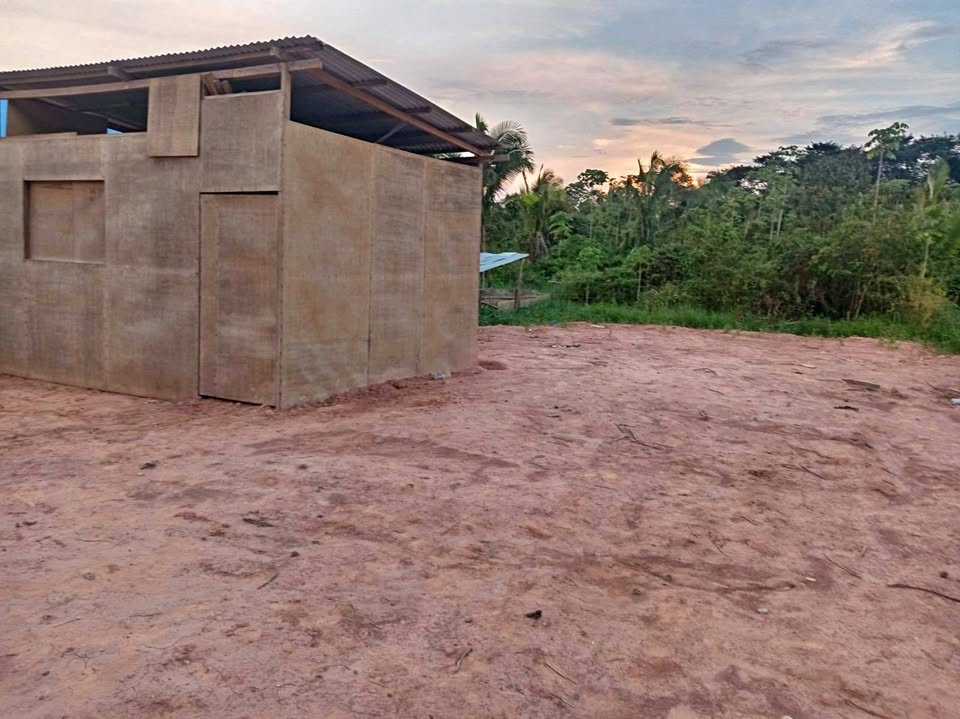
Venta de terreno km 19, margen izquierdo Precio negociable..
S/ 12,000 · 350 m² · Campoverde, UC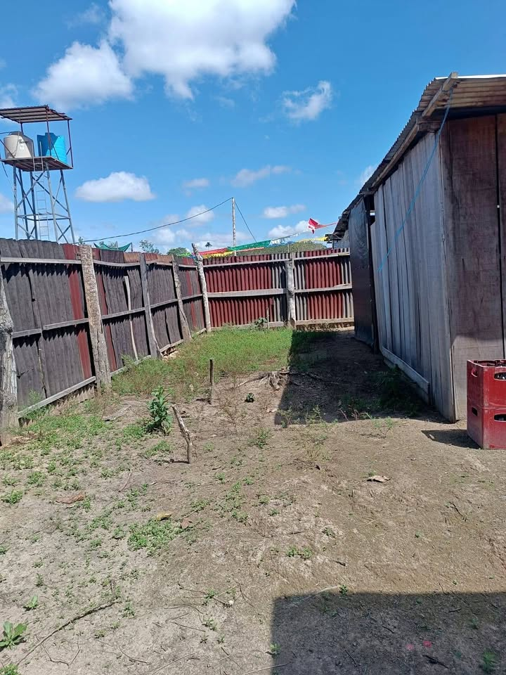
TERRENO EN REMATE POR SALUD
S/ 12,000 · 2,325 m² · Callería, UC Se vende un lote de terreno
Se vende un lote de terreno
S/ 8,000 · 140 m² · Callería, UC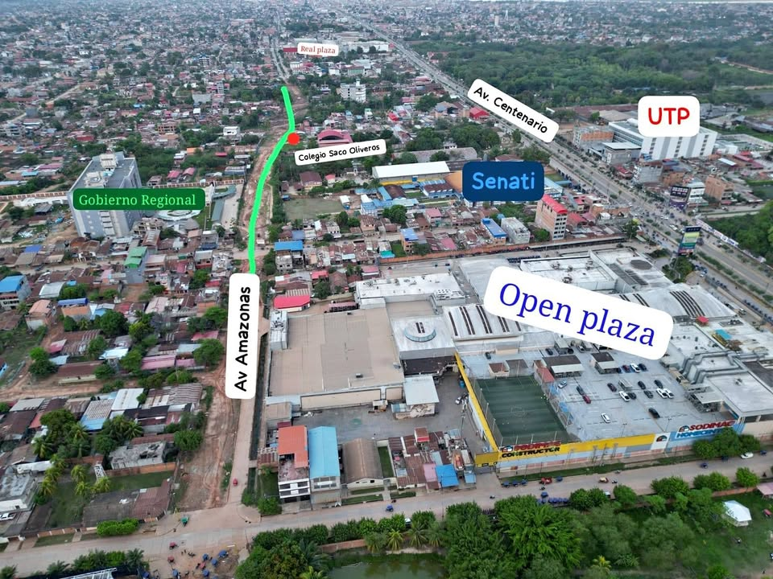
De Ocasión terreno en Av. Amazonas Pucallpa
S/ 145,000 · 140 m² · Callería, UC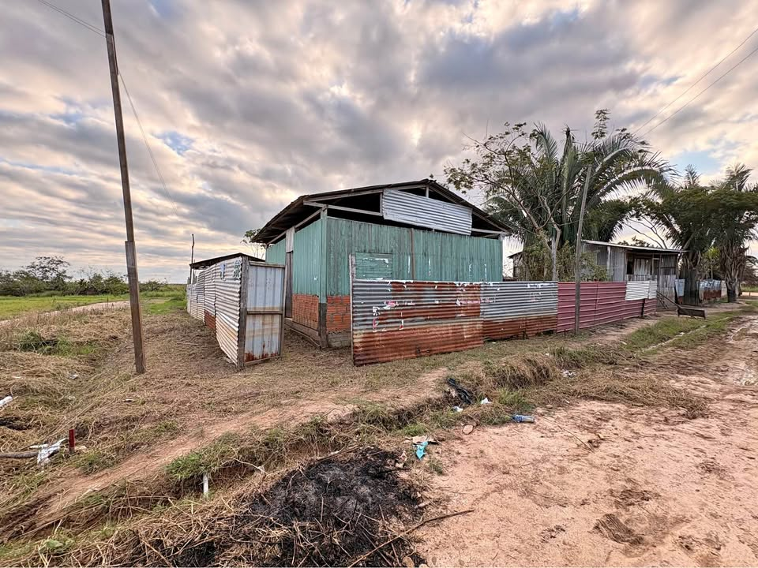
SE VENDE ESTE TERRENO
S/ 15,000 · 250 m² · Callería, UC Terreno con título de propiedad
Terreno con título de propiedad
S/ 98,000 · 300 m² · Callería, UC Se vende un terreno en el km 13 x el colegio
Se vende un terreno en el km 13 x el colegio
S/ 40,000 · 300 m² · Callería, UC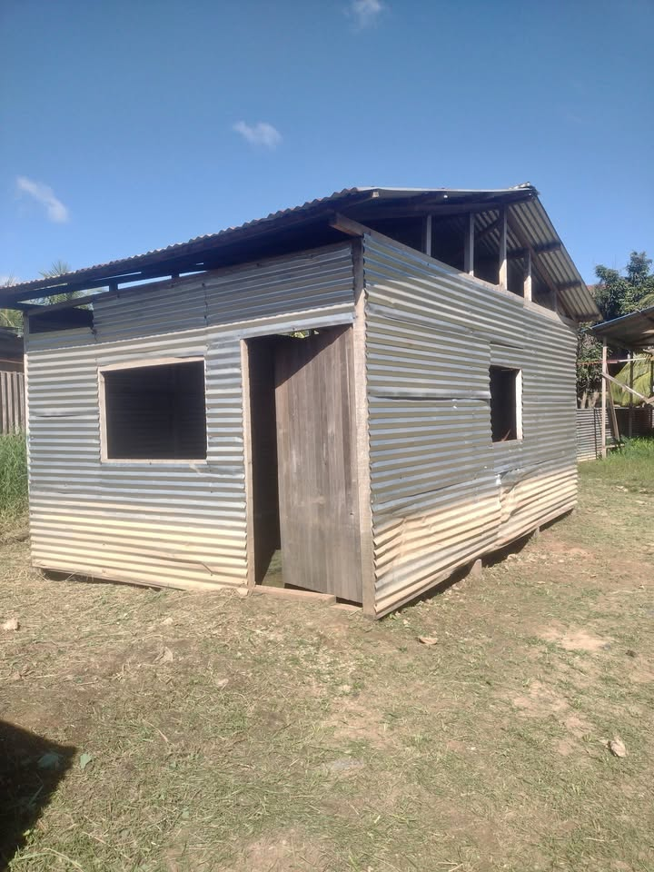
Remato terreno en 10 de marzo manantay
S/ 5,000 · 98 m² · Yarinacocha, UC TERRENO EN REMATE
TERRENO EN REMATE
S/ 14,000 · 2,325 m² · Callería, UC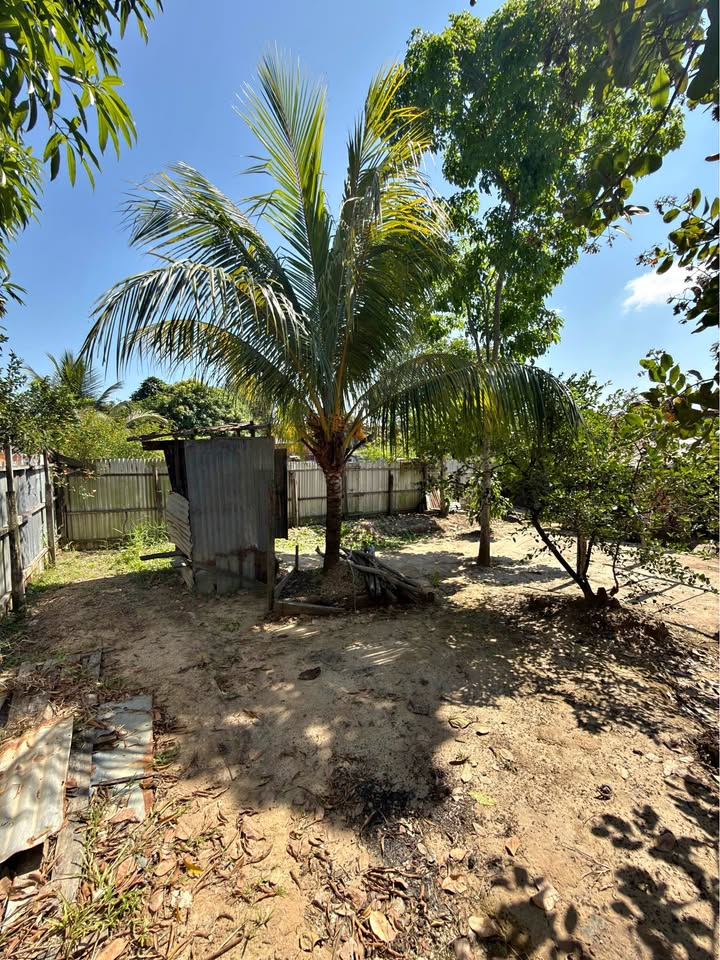
🔥🏡 ¡TERRENO EN VENTA – MARÍA LUISA DE NITZUMA, PUCALLPA!
S/ 60,000 · 300 m² · Yarinacocha, UC- Sin fotoTerreno en venta Tushmo
S/ 16,000 · 25 m² · Yarinacocha, UC - Sin fotoSe vende 2 terrenos en san Alejandro Irazola ubicado en la junta vecinal Las Flores a unos
S/ 50,000 · 200 m² · Irazola, UC - Sin fotoSe vende lotes de terreno en el km. 17 con título de propiedad
S/ 15,000 · Yarinacocha, UC - Sin fotoTerreno
S/ 170,000 · 160 m² · Callería, UC - Sin foto🚨 REMATE DE TERRENO 300 M² EN PISTA – A 2 CUADRAS DE LA PLAZA LAURA BOZZO🚨
S/ 95,000 · 300 m² · Callería, UC - Sin fotoRENATO TERRENO
S/ 25,000 · 300 m² · Yarinacocha, UC - Sin fotoVenta de terreno
S/ 15,000 · 300 m² · Callería, UC - Sin fotoSe remata terreno en tushmo 7x25
S/ 1,500 · 175 m² · Yarinacocha, UC - Sin fotoSe vende Terreno
S/ 65,000 · 200 m² · Padre Abad, UC - Sin foto🚨 SE REMATA TERRENO DE 300 M² CON TÍTULO DE PROPIEDAD A S/ 25 MIL SOLES – PUCALLPA 🚨
S/ 25,000 · 300 m² · Callería, UC - Sin fotoSe vende terreno 10 x 30 / 300m2 AA.HH. Las Brisas de Yarinacocha
S/ 1,111,111 · 300 m² · Yarinacocha, UC - Sin foto🚨 ¡REMATE! TERRENO DE 400 M² EN LA MISMA AV. UCAYALI – KM 8 🚨
S/ 60,000 · 400 m² · Callería, UC - Sin fotoTerreno en venta con título de propiedad.
S/ 55,000 · 400 m² · Callería, UC - Sin fotoSe+vende+un+terreno+ubicado+en+en+km13+10x30
S/ 27,000 · 300 m² · Callería, UC - Sin fotoOcasión: Terreno en Esquina 300 m² con Título Sunarp – Manantay
S/ 160,000 · 300 m² · Callería, UC
Búsquedas relacionadas
Preguntas frecuentes
¿Cómo verifico en SUNARP un lote en Ucayali?
Pide al vendedor el número de partida registral y consúltalo gratis en Conoce Aquí de SUNARP. Luego solicita la copia literal o el certificado registral para ver quién es el dueño y si hay cargas o gravámenes. Más pasos en nuestra guía Compra segura.
¿Los datos de los anuncios están verificados?
No. Precio, tamaño, ubicación y situación legal los escribe cada vendedor. CompraTerrenos.pe no los verifica: confirma todo antes de pagar.
¿Qué diferencia hay entre posesión y propiedad?
Una constancia o certificado de posesión no es un título de propiedad inscrito. Para ser propietario frente a terceros, el título debe estar inscrito en Registros Públicos. Ver Compra segura.
¿Puedo comprar desde el extranjero?
Sí, en general mediante un poder por escritura pública otorgado en el consulado. Revisa Comprar desde el extranjero (información general, no es asesoría legal).
Datos de anuncios públicos actualizados el 9 de octubre de 2026. La información la publica cada vendedor; CompraTerrenos.pe no la verifica.